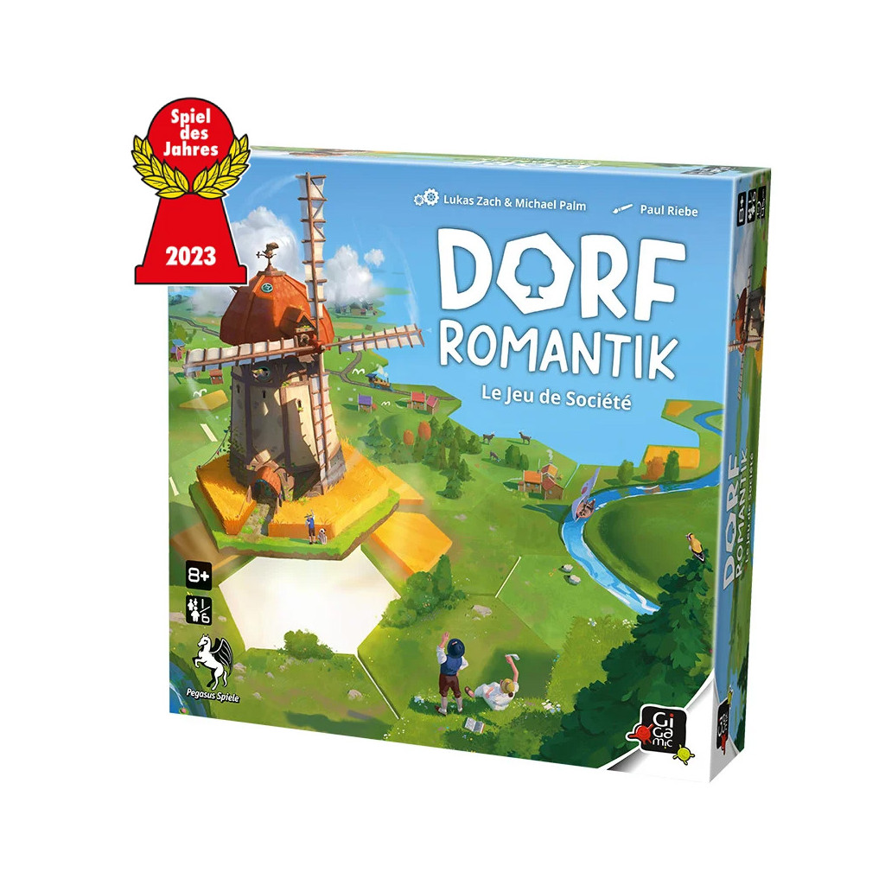
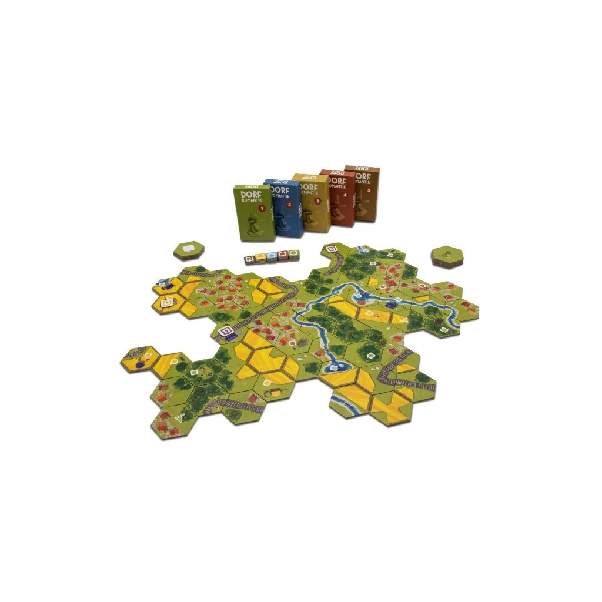

Des rivières qui ondulent, des forêts qui bruissent, des champs de blé qui se balancent dans le vent et, ici et là, un mignon petit village : c'est ça Dorfromantik !
Le jeu vidéo du petit studio de développement Toukana Interactive a enthousiasmé la communauté des joueurs depuis son accès anticipé en mars 2021 et a déjà remporté toutes sortes de prix prestigieux. Aujourd'hui, Michael Palm et Lukas Zach transforment le populaire jeu de stratégie et de réflexion sur la construction en un jeu familial pour petits et grands avec Dorfromantik.
Dans Dorfromantik, jusqu'à six joueurs travaillent ensemble pour poser des tuiles hexagonales afin de créer un beau paysage et essayer d'exécuter les commandes de la population, tout en posant une piste et une rivière aussi longues que possible, mais aussi en tenant compte des drapeaux qui donnent des points dans les zones fermées. Plus les joueurs y parviennent, plus ils peuvent marquer de points à la fin.
Au cours de la campagne rejouable, les points gagnés peuvent être utilisés pour débloquer de nouvelles tuiles qui sont cachées dans des boîtes initialement verrouillées. Celles-ci posent de nouvelles tâches supplémentaires aux joueurs et permettent d'augmenter le score de plus en plus haut.
8 ans
joueurs
minutes